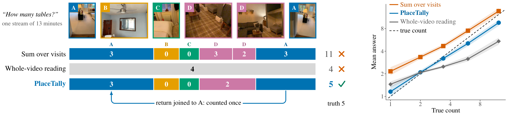
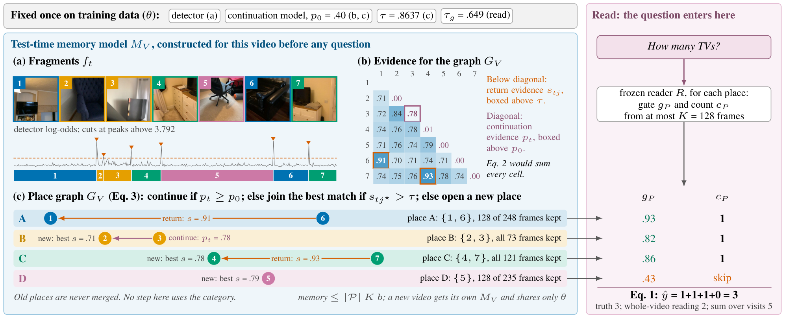
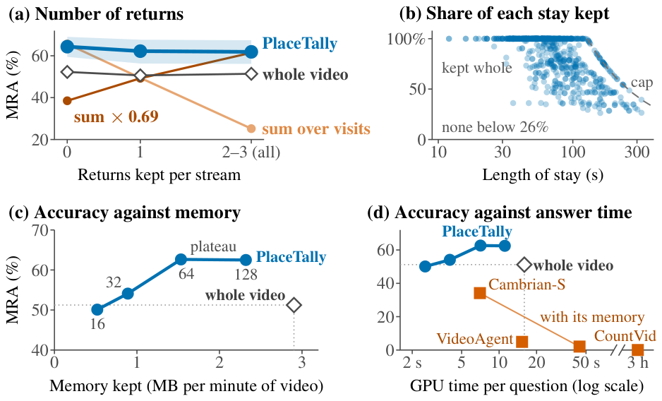

PlaceTally: A Test-Time Memory Model
for Constructing Place Graphs
Queen Mary University of London
- Paper (PDF)
- arXiv (link to follow)
- Supplementary material
- Code
- Benchmark
- BibTeX

Abstract
Counting distinct objects in a video is hard when the camera returns to places it has seen. A vision-language model that reads the whole video answers with a few small numbers, and one that reads it in parts counts an object again in every part that shows it. Object trackers need the category before the video is read, or a fixed vocabulary. We observe that a memory for counting does not need to know what it is looking for, only where it has been: objects rarely leave a room between visits, so parts of a video grouped by place share almost no objects, and a place can be recognised before any question is asked. Building on this, we introduce PlaceTally, a question-blind test-time memory model that constructs a place graph for each video. Each video fragment joins the place of its best earlier match or opens a new place, because a strong match is rarely wrong while a true return often matches weakly. A frozen vision-language model counts each place once from at most 128 of its frames, so every read has a bounded input and the memory grows with the number of places; the graph is built 15 times faster than real time. On RevisitCount, our benchmark of real room re-recordings, it scores 62.5% mean relative accuracy on test rooms and 61.2% on held-out rooms, against 51.2% and 44.3% for the same model reading the whole video. It stays level as rooms return more or less often, while a fixed correction of summed visits moves from 38.5% to 61.4%.
Method

Robustness and cost

Supplementary material
The supplementary material is kept up to date here. Later versions keep the section letters below, so references in the paper such as “Supp. C” still point to the right place. Every version stays available.
| Version | Date | File |
|---|---|---|
| 1 (latest) | 17 November 2026 | supplement_v1_2026-11-17.pdf |
| A | RevisitCount Benchmark Details |
| B | Method Details |
| C | Baselines, Controls and Other Models |
| D | Additional Results |
| E | Examples and Failure Cases |
| F | Pre-Registration Record |
| G | Compute and Reproducibility |
| H | Data, Licences and Privacy |
Code and benchmark
The GitHub repository has two folders. code/ holds PlaceTally’s code, trained weights and stored results, with scripts that recompute the paper’s numbers. benchmark/ holds RevisitCount: stream definitions, questions and answers, and scripts that rebuild the frames from the source datasets. To recompute the paper’s ARKit numbers on a CPU:
cd code pip install -e . python scripts/score_answers.py
The code is under the MIT licence and the benchmark annotations under CC BY-NC 4.0. ARKitScenes, 3RScan and MultiScan keep their own terms; the code and benchmark folders hold no images, video or meshes from them.
Citation
@misc{osmanli2026placetally,
title = {PlaceTally: A Test-Time Memory Model for Constructing Place Graphs},
author = {Osmanli, Alibay and Gong, Shaogang},
year = {2026},
url = {https://alibayosmanli.github.io/placetally}
}